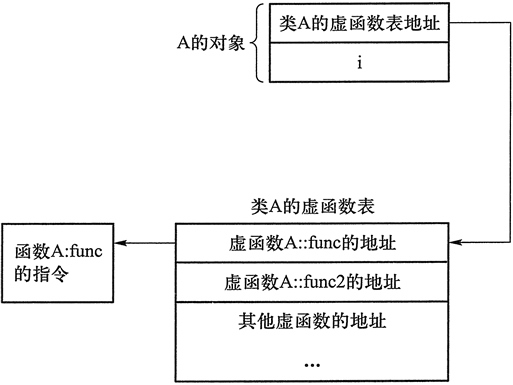
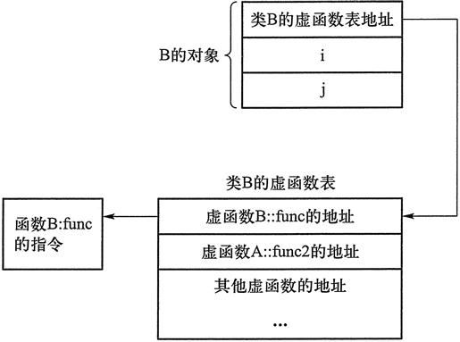

首页 > 编程笔记
C++虚函数表（多态的实现原理）
“多态”的关键在于通过基类指针或引用调用一个虚函数时，编译时不确定到底调用的是基类还是派生类的函数，运行时才确定。这是如何实现的呢？
请看下面的程序，该程序演示了多态类对象存储空间的大小。
8, 12
如果将程序中的 virtual 关键字去掉，输出结果变为：
4, 8
对比发现，有了虚函数以后，对象所占用的存储空间比没有虚函数时多了 4 个字节。实际上，任何有虚函数的类及其派生类的对象都包含这多出来的 4 个字节，这 4 个字节就是实现多态的关键——它位于对象存储空间的最前端，其中存放的是虚函数表的地址。
每一个有虚函数的类（或有虚函数的类的派生类）都有一个虚函数表，该类的任何对象中都放着该虚函数表的指针（可以认为这是由编译器自动添加到构造函数中的指令完成的）。
虚函数表是编译器生成的，程序运行时被载入内存。一个类的虚函数表中列出了该类的全部虚函数地址。例如，在上面的程序中，类 A 对象的存储空间以及虚函数表（假定类 A 还有其他虚函数）如图 1 所示。
类 B 对象的存储空间以及虚函数表（假定类 B 还有其他虚函数）如图 2 所示。
多态的函数调用语句被编译成根据基类指针所指向的（或基类引用所引用的）对象中存放的虚函数表的地址，在虚函数表中查找虚函数地址，并调用虚函数的一系列指令。
假设 pa 的类型是 A*，则 pa->func() 这条语句的执行过程如下：
1) 取出 pa 指针所指位置的前 4 个字节，即对象所属的类的虚函数表的地址（在 64 位编译模式下，由于指针占 8 个字节，所以要取出 8 个字节）。如果 pa 指向的是类 A 的对象，则这个地址就是类 A 的虚函数表的地址；如果 pa 指向的是类 B 的对象，则这个地址就是类 B 的虚函数表的地址。
2) 根据虚函数表的地址找到虚函数表，在其中查找要调用的虚函数的地址。不妨认为虚函数表是以函数名作为索引来查找的，虽然还有更高效的查找方法。
如果 pa 指向的是类 A 的对象，自然就会在类 A 的虚函数表中查出 A::func 的地址；如果 pa 指向的是类 B 的对象，就会在类 B 的虚函数表中查出 B::func 的地址。
类 B 没有自己的 func2 函数，因此在类 B 的虚函数表中保存的是 A::func2 的地址，这样，即便 pa 指向类 B 的对象，
3) 根据找到的虚函数的地址调用虚函数。
由以上过程可以看出，只要是通过基类指针或基类引用调用虚函数的语句，就一定是多态的，也一定会执行上面的查表过程，哪怕这个虚函数仅在基类中有，在派生类中没有。
多态机制能够提高程序的开发效率，但是也增加了程序运行时的开销。虚函数表、各个对象中包含的 4 个字节的虚函数表的地址都是空间上的额外开销；而查虚函数表的过程则是时间上的额外开销。
在计算机发展的早期，计算机非常昂贵稀有，运行速度慢，计算机的运算时间和内存是宝贵的，因此人们不惜多花人力编写运行速度更快、更节省内存的程序；如今，计算机的运算时间和内存往往没有人的时间宝贵，运算速度也很快，因此，在用户可以接受的前提下，降低程序运行的效率以提升人员的开发效率就是值得的了。“多态”的应用就是典型例子。
请看下面的程序，该程序演示了多态类对象存储空间的大小。
#include <iostream> using namespace std; class A { public: int i; virtual void func() {} virtual void func2() {} }; class B : public A { int j; void func() {} }; int main() { cout << sizeof(A) << ", " << sizeof(B); //输出 8,12 return 0; }在 32 位编译模式下，程序的运行结果是：
8, 12
如果将程序中的 virtual 关键字去掉，输出结果变为：
4, 8
对比发现，有了虚函数以后，对象所占用的存储空间比没有虚函数时多了 4 个字节。实际上，任何有虚函数的类及其派生类的对象都包含这多出来的 4 个字节，这 4 个字节就是实现多态的关键——它位于对象存储空间的最前端，其中存放的是虚函数表的地址。
每一个有虚函数的类（或有虚函数的类的派生类）都有一个虚函数表，该类的任何对象中都放着该虚函数表的指针（可以认为这是由编译器自动添加到构造函数中的指令完成的）。
虚函数表是编译器生成的，程序运行时被载入内存。一个类的虚函数表中列出了该类的全部虚函数地址。例如，在上面的程序中，类 A 对象的存储空间以及虚函数表（假定类 A 还有其他虚函数）如图 1 所示。

图1：类A对象的存储空间以及虚函数表
图1：类A对象的存储空间以及虚函数表
类 B 对象的存储空间以及虚函数表（假定类 B 还有其他虚函数）如图 2 所示。

图2：类B对象的存储空间以及虚函数表
图2：类B对象的存储空间以及虚函数表
多态的函数调用语句被编译成根据基类指针所指向的（或基类引用所引用的）对象中存放的虚函数表的地址，在虚函数表中查找虚函数地址，并调用虚函数的一系列指令。
假设 pa 的类型是 A*，则 pa->func() 这条语句的执行过程如下：
1) 取出 pa 指针所指位置的前 4 个字节，即对象所属的类的虚函数表的地址（在 64 位编译模式下，由于指针占 8 个字节，所以要取出 8 个字节）。如果 pa 指向的是类 A 的对象，则这个地址就是类 A 的虚函数表的地址；如果 pa 指向的是类 B 的对象，则这个地址就是类 B 的虚函数表的地址。
2) 根据虚函数表的地址找到虚函数表，在其中查找要调用的虚函数的地址。不妨认为虚函数表是以函数名作为索引来查找的，虽然还有更高效的查找方法。
如果 pa 指向的是类 A 的对象，自然就会在类 A 的虚函数表中查出 A::func 的地址；如果 pa 指向的是类 B 的对象，就会在类 B 的虚函数表中查出 B::func 的地址。
类 B 没有自己的 func2 函数，因此在类 B 的虚函数表中保存的是 A::func2 的地址，这样，即便 pa 指向类 B 的对象，
pa->func2();这条语句在执行过程中也能在类 B 的虚函数表中找到 A::func2 的地址。3) 根据找到的虚函数的地址调用虚函数。
由以上过程可以看出，只要是通过基类指针或基类引用调用虚函数的语句，就一定是多态的，也一定会执行上面的查表过程，哪怕这个虚函数仅在基类中有，在派生类中没有。
多态机制能够提高程序的开发效率，但是也增加了程序运行时的开销。虚函数表、各个对象中包含的 4 个字节的虚函数表的地址都是空间上的额外开销；而查虚函数表的过程则是时间上的额外开销。
在计算机发展的早期，计算机非常昂贵稀有，运行速度慢，计算机的运算时间和内存是宝贵的，因此人们不惜多花人力编写运行速度更快、更节省内存的程序；如今，计算机的运算时间和内存往往没有人的时间宝贵，运算速度也很快，因此，在用户可以接受的前提下，降低程序运行的效率以提升人员的开发效率就是值得的了。“多态”的应用就是典型例子。
关注公众号「站长严长生」，在手机上阅读所有教程，随时随地都能学习。内含一款搜索神器，免费下载全网书籍和视频。

微信扫码关注公众号